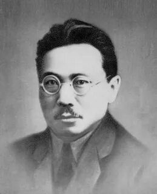

Максим Кирович Аммосов
10.12.1897 - 27.07.1938
Платон Алексеевич Ойунский
30.10.1893 - 31.10.1939

27 апреля 1922 года декретом ВЦИК была образована Якутская Автономная Советская Социалистическая Республика в составе РСФСР. Это политическое решение дало правовую, конституционную основу для формирования государственности в рамках автономной республики.
Провозглашение Якутской АССР стало актом огромного исторического значения. Оно положило начало кардинальным политическим, экономическим, социальным и культурным преобразованиям в республике, важным фактором консолидации её многонационального народа. Политическое решение национального вопроса послужило благоприятной основой для экономического развития.
Основателями государственности республики являются общественно-политические деятели Якутии 20 века: Исидор Никифорович Барахов, Максим Кирович Аммосов, Платон Алексеевич Ойунский, Степан Максимович Аржаков и их соратники, сыгравшие значительную роль в становлении и развитии государственности ЯАССР.
Выдающиеся личности в истории Якутии

Одним из инициаторов образования автономии в Якутии явился советский государственный и партийный деятель М. К. Аммосов, который поставил вопрос об образовании Якутской АССР перед Центральным Комитетом партии и Народным комиссариатом по делам национальностей РСФСР. В июне 1921 г. областное партийное собрание, заслушав доклад Аммосова о решении Народного комиссариата по делам национальностей РСФСР по вопросу о Якутской автономии, приняло резолюцию об осуществлении автономии.
Платон Алексеевич Ойунский - Председатель Центрального Исполнительного комитета ЯАССР (1923–1926 гг.), писатель-мыслитель, оставивший после себя глубокие мысли об историческом пути своего народа, о ходе человеческой истории вообще, о наступившей новой эпохе, о роли и вкладах в истории известных личностей, которые содержатся в его публицистике, воспоминаниях, работах на общественно-политические темы и в его художественных произведениях.
Решающую роль в образовании Якутской АССР в апреле 1922 года сыграл также Исидор Барахов,
"Барахов И. Н. всегда пользовался глубокой симпатией окружающих его товарищей. Замкнутый по характеру, он отличался склонностью к теоретическим обобщениям, философским складом ума, последовательностью суждений, глубиной мысли, любовью к книге".
В. С. Синеглазова

Образование ЯАССР в 1922 году привело к важнейшим изменениям в политическом, социально-экономическом, культурном развитии края. Было сформировано советское правительство ЯАССР – Совнарком во главе с Платоном Ойунским, создан законодательный орган – ЯЦИК, в 1924 году принята первая Конституция ЯАССР.
Первая конституция Якутской АССР
Проект Конституции ЯАССР был утвержден III Всеякутским съездом Советов 22 декабря 1924.
Первая Конституция ЯАССР узаконила высшие органы государственной власти новой республики: Всеякутские съезды Советов, Центральный Исполнительный Комитет, Совет Народных Комиссаров; центральные органы власти: народные комиссариаты, управления; местные органы власти: исполнительные комитеты и Советы депутатов.

27 сентября 1990 года Верховный Совет Якутии принял Декларацию о государственном суверенитете. Основными задачами суверенитета республики стали: быть полновластным хозяином на своей земле, распоряжаться её природными ресурсами на правах собственника, проводить самостоятельную внутреннюю политику в интересах социально - демократического развития народов республики и возрождение их традиционной духовной культуры, тем самым реализовать вековую мечту народов, их стремление к свободному, равноправному развитию с другими народами России, достижению самоуправления.
Это судьбоносное для Якутии решение, принятое Верховным Советом ЯАССР двенадцатого созыва, стало краеугольным камнем для фундамента современной государственности нашей Республики. В этом видится большая заслуга народных депутатов тогдашнего созыва, сплоченных общей идеей о необходимости коренных преобразований в жизни общества и государства. Огромную историческую ответственность тогда взял на себя Председатель Верховного Совета республики Михаил Николаев, в непростых условиях призвав депутатский корпус провозгласить государственный суверенитет Якутии. Закономерно, что впоследствии Михаил Ефимович Николаев стал первым всенародно избранным руководителем новой Якутии – Президентом Республики Саха (Якутия).
Якутия! Гордимся мы тобою,
Здесь все народы, как одна семья,
И все стихи, написанные мною,
Тебе лишь только посвящаю я.
С. Шестаков
Основной закон Республики закрепил положения и нормы, содержащиеся в Декларации о государственном суверенитете, заложил правовую основу для дальнейшего переустройства жизни Республики. Конституция чётко поясняет, что Республика Саха (Якутия) входит в состав Российской Федерации. Впервые земля и природные ресурсы были признаны собственностью Республики и достоянием ее народа.
Республика Саха (Якутия) является суверенным, демократическим и правовым государством, основанным на праве ее многонационального народа на самоопределение.
Руководители Республики Саха (Якутия)
17 октября 1991 года - учрежден пост Президента Якутской - Саха Советской Социалистической Республики, приняты законы «О Президенте Якутской - Саха Советской Социалистической Республики», «О выборах Президента Якутской - Саха Советской Социалистической Республики».
Николаев Михаил Ефимович –
Первый Президент избран в 1991 г. 20 декабря народными выборами.
22 декабря1996 г. был переизбран на второй срок
"С провозглашением суверенитета, законодательным подкреплением экономической самостоятельности, утверждением нового статуса республики у нашего народа появился исторический шанс создать качественно новое общество - общество, в котором все равны и живут за счет своего труда, где каждому гарантируется достойное место в соответствии с его возможностями и способностями"
М. Е. Николаев, первый президент РС (Я)


Штыров Вячеслав Анатольевич
Президент РС (Я)
27.01.2002-31.05.2010
Борисов Егор Афанасьевич
14.09.2014 - 31.05.2018 г.
15.06.2012 г. Госсобрание республики Ил Түмэн утвердил наименование высшего должностного лица республики - «Саха Республикатын Ил Дархана»
Николаев Айсен Сергеевич
Глава РС (Я)
10.09.2018 г.
10 сентября 2018 г. избран главой Республики Саха (Якутия) на прямых досрочных выборах. Участвовал в них от партии "Единая Россия". Получил 71,40% голосов избирателей. 27 сентября того же года Айсен Николаев официально вступил в должность.
Секретарь, член президиума политсовета регионального отделения партии "Единая Россия" в Республике Саха (Якутия).
"Уверен, что вместе мы справимся с самыми сложными задачами, стоящими перед нами, и сделаем все возможное и даже невозможное для процветания нашей любимой. Якутии, а значит, нашей великой России!"
А. С. Николаев, глава Республики Саха (Якутия)
Уважаемые пользователи!
Представленные здесь книги вы можете почитать в Электронной библиотеке https://new.nlrs.ru/ или взять в ДТК - Центр чтения филиала Национальной библиотеки РС (Я)
Mobirise web software - Go now